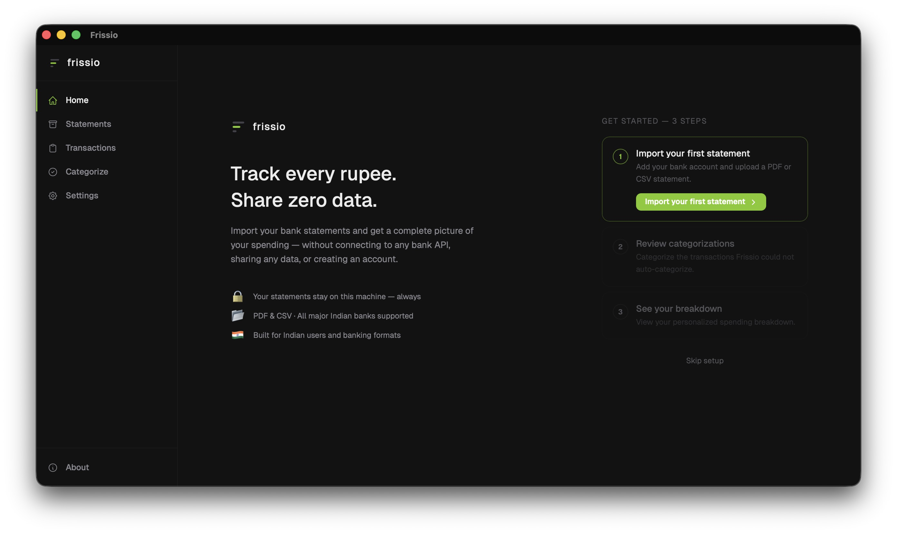
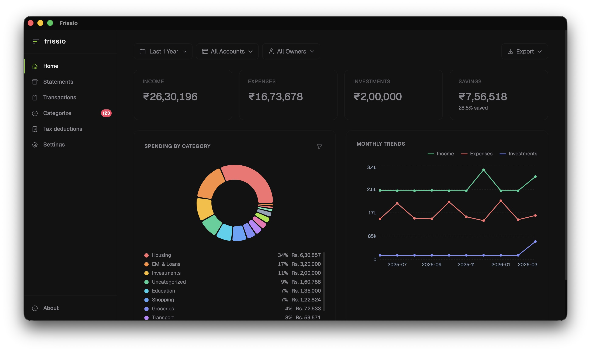
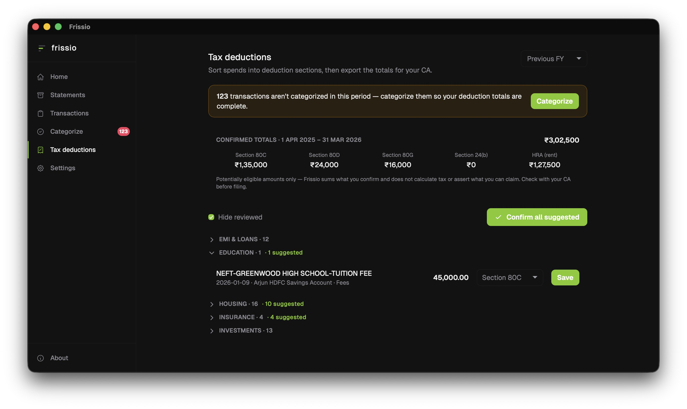
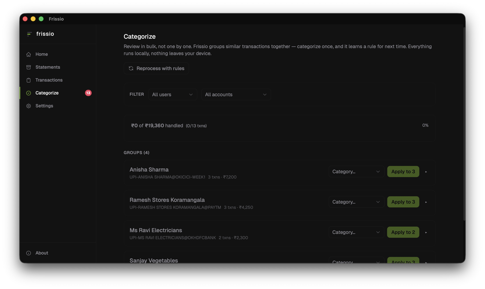
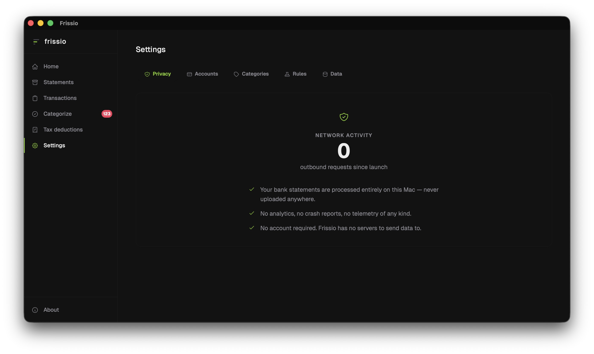

Drop in any bank or credit card statement. Every transaction is auto-categorized into income, investments, and expenses, then totaled into a clean summary you can hand your CA at tax time.
Two banks, three cards, formats that don't line up, recurring charges you've stopped tracking. Frissio makes the whole picture legible.
Income, investments, expenses. Categories and merchants. Frissio sorts every transaction on its own and shows the structure underneath your spending.
Bank statements and credit cards from any Indian bank. PDF or CSV. Recognizes Zomato, Swiggy, Uber, IRCTC, and the merchants you actually use.
Download once, drop a statement in. No email, no password, no categories to configure, no rules to write. From drop to dashboard in under a minute.
Frissio recognizes the format, pulls out every transaction, and tells income, investments, and expenses apart on its own. A categorized breakdown is ready in seconds.


The breakdown you would build in a spreadsheet, without the spreadsheet.
Frissio sorts the year's spending into the sections that matter at filing time, rent, insurance, home loan, donations, investments, and totals what you confirm. Export it as a clean PDF or CSV for your CA. It sums what you tag and never calculates your tax or tells you what to claim. That stays between you and your accountant.


Frissio groups uncategorized merchants together so you handle them in batches, not row by row. Set the category once. Every statement after that uses your rule, with no spreadsheet upkeep and no monthly retagging.
Apple itself blocks Frissio from reaching the internet. Open Activity Monitor while you use it. Bytes sent stay at zero, every single session.

Track joint spending with a partner, a flatmate, or a friend group. See who paid for what and what each person owes, all in the same app.
Tap a slice, a label, or a month. Filter, sort, and search every underlying transaction.
SIPs, mutual funds, interest income. Frissio recognizes them for what they are, not as expenses. Your savings number reflects reality.
Track every rupee. Share zero data.
Download for Mac